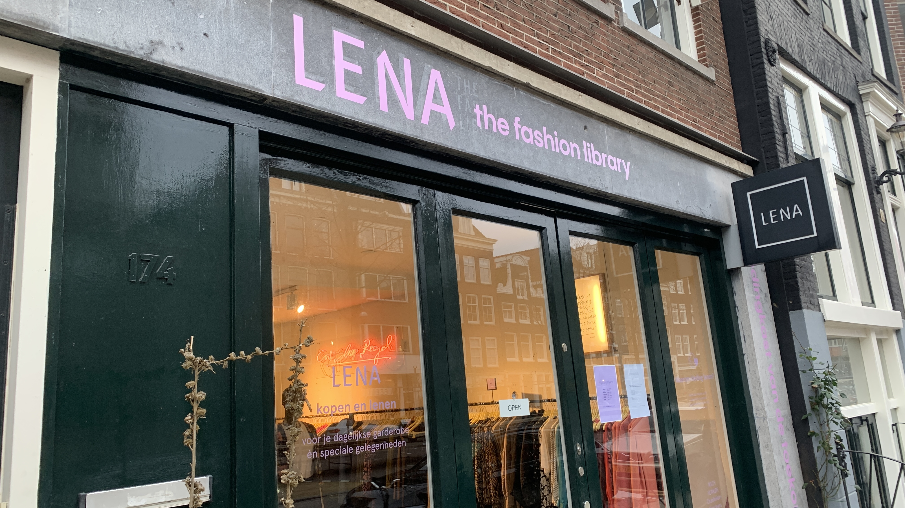
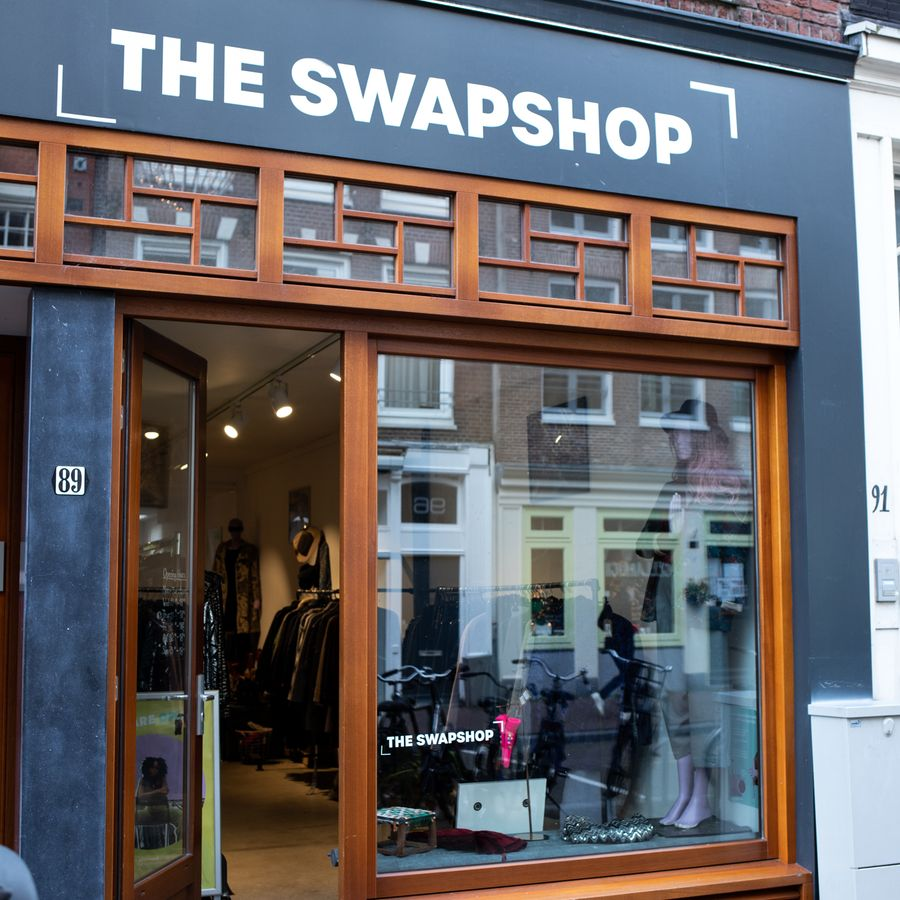
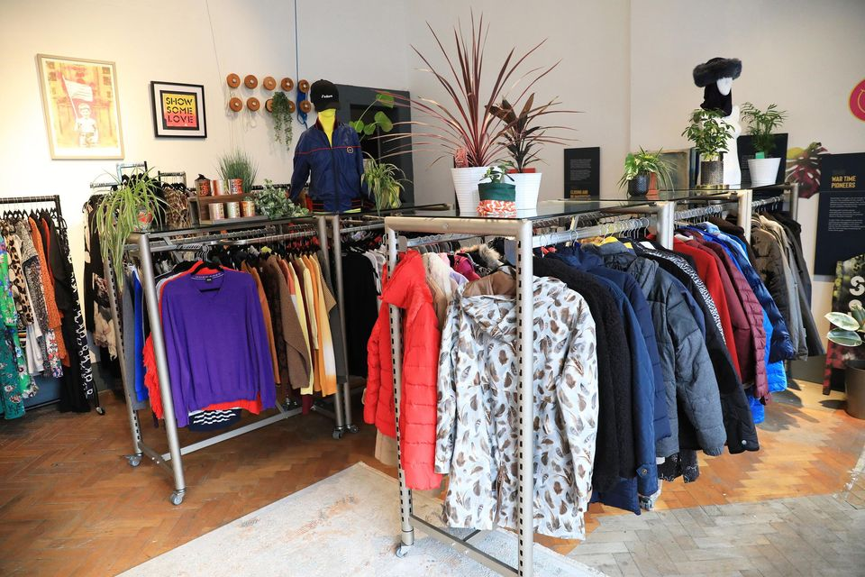
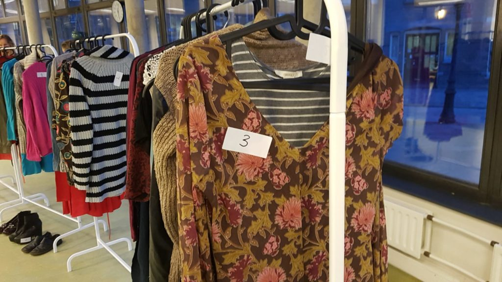
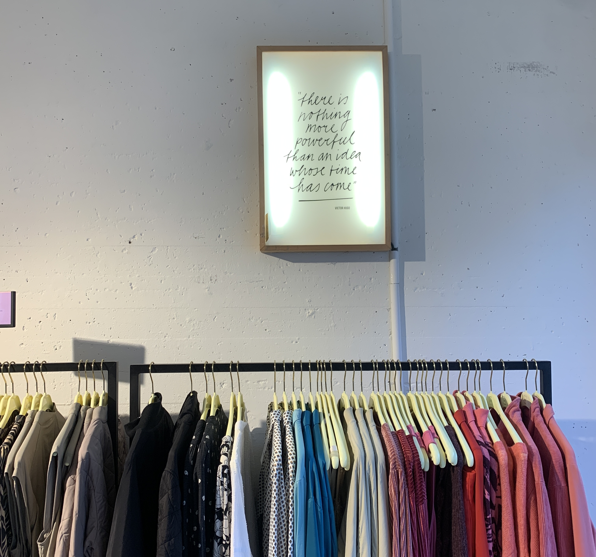

5 Kledingbibliotheken in Amsterdam
Kledingruil initiatieven bij jou om de hoek!
U zult zich nu wel afvragen: "Maar waar zijn zulke kledingbibliotheken te vinden?" Geen zorgen! Wij hebben speciaal een lijstje gemaakt met vijf ontzettend leuke kledingruil initiatieven in Amsterdam.
LENA The Fashion Library
De eerste winkel op ons lijstje is LENA: The fashion Library. Een charmant boetiekje in het hart van de Jordaan. Hier draait alles om meer dan alleen kleding; je kan hier namelijk meer dan alleen lenen.... Ze bieden namelijk ook de mogelijkheid om kleding te ruilen én te kopen! In dit knusse winkeltje vind je zorgvuldig geselecteerde kledingstukken die wachten om een nieuw avontuur met je aan te gaan. Of je nu op zoek bent naar een uniek vintage item, een trendy outfit of gewoon wat nieuwe inspiratie, bij LENA zal je het vast vinden. LENA heeft een erg breed aanbod qua merken, van elegant naar stoer, van casual naar luxe. In de winkel staan veel verschillende bordjes waarop de stijl van de kleding staan en voor welke gelegenheid je het kunt dragen. Ontzettend leuk dus!
The Swapshop
In 2018 opgericht, onder de naam "Awearness Kollektif". Vriendinnen Laura en Monique wilden iets doen aan de overconsumptie en de enorme verspilling in de kledingindustrie. Zij zagen kleding ruilen als een simpele en vooral hele leuke en leuke oplossing. The SwapShop staat momenteel helemaal in bloei, terwijl ze zich helemaal focussen op kledingruil, en het redden van deze overconsumptie cultuur. Het concept is eenvoudig maar geweldig: in plaats van geld uit te geven, ruil je kledingstukken die je niet meer draagt voor iets nieuws om te koesteren. Het is een cyclus van geven en ontvangen, waarbij elke ruil een nieuw hoofdstuk toevoegt aan de levensloop van kledingstukken. Wat The SwapShop zo bijzonder maakt, is de diversiteit van hun aanbod. Hier vind je vintage schatten naast moderne must-haves, en elk stuk heeft zijn eigen unieke charme. Of je nu op zoek bent naar een tijdloze jurk, een kleurrijke trui of een funky accessoire, de kans is groot dat je het hier vindt, en dat alles zonder een cent uit te geven.
SWOPS ClothesSwap
Dus als je op zoek bent naar een unieke winkelervaring die mode, duurzaamheid en gemeenschap combineert, zoek dan niet verder dan SWOPS Clothesswap. Stap binnen, laat je inspireren en ruil je weg naar een meer stijlvolle en bewuste toekomst. SWOPS bevindt zich in hartje centrum van Amsterdam. SWOPS is een kledingruilinitiatief in Amsterdam dat niet alleen duurzaamheid bevordert, maar ook gemeenschapsgevoel en modebewustzijn stimuleert. Mensen komen samen om kledingstukken te ruilen, wat niet alleen bijdraagt aan het verminderen van textielverspilling, maar ook aan het bevorderen van een circulaire economie. Deze evenementen bieden niet alleen de mogelijkheid om kleding te ruilen, maar ook om nieuwe mensen te ontmoeten en deel uit te maken van een beweging die gericht is op bewust consumeren.
De WasStraat
Veel mensen hebben een overvolle kledingkast maar voelen zich toch alsof ze niets hebben om aan te trekken. Dit komt doordat er vaak kledingstukken in de kast hangen die zelden of nooit worden gedragen. Dit kan leiden tot gevoelens van frustratie en verspilling van ruimte en middelen. Evenementen zoals De WasStraat bieden een oplossing door mensen de kans te geven hun ongedragen kleding te ruilen voor nieuwe stukken, waardoor zowel textielverspilling als het gevoel van "niets om aan te trekken" worden verminderd. Bij De WasStraat gelden de volgende regels: Neem minimaal 3 en maximaal 7 mooie kledingstukken mee!
Pasar Guci
In Studio k (amsterdam Oost) zit Pasar Guci. Pasar Guci organiseert twee keer per jaar een kledingruilevenement, waarbij mensen samenkomen om hun ongewenste kledingstukken te ruilen voor nieuwe items. Dit evenement biedt een duurzame en budgetvriendelijke manier om je kledingkast te vernieuwen en tegelijkertijd deel te nemen aan een gemeenschapsevenement. Bezoekers brengen kledingstukken mee die ze niet langer dragen maar nog steeds in goede staat verkeren. Tijdens het evenement kunnen ze deze kleding ruilen voor items die andere deelnemers hebben meegebracht. Dit zorgt voor een leuke en sociale ervaring waarbij mensen elkaar ontmoeten, nieuwe kleding ontdekken en tegelijkertijd bijdragen aan een meer duurzame manier van consumeren.